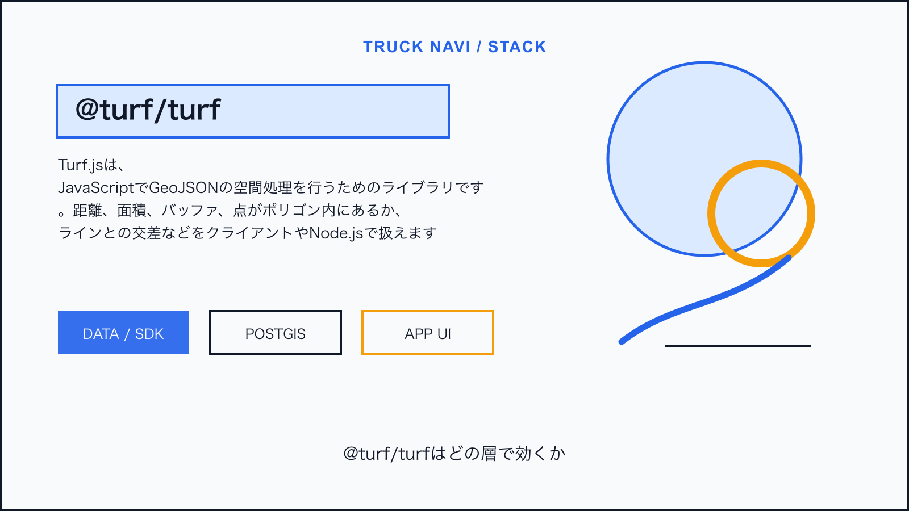
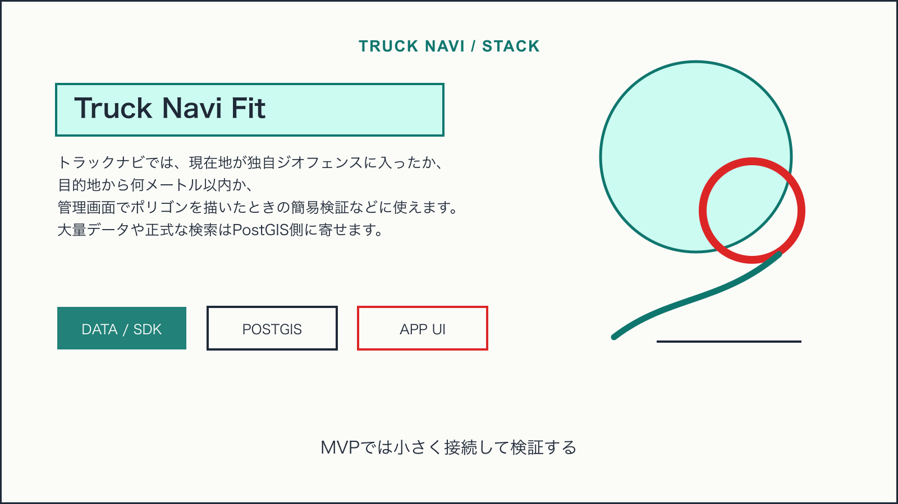
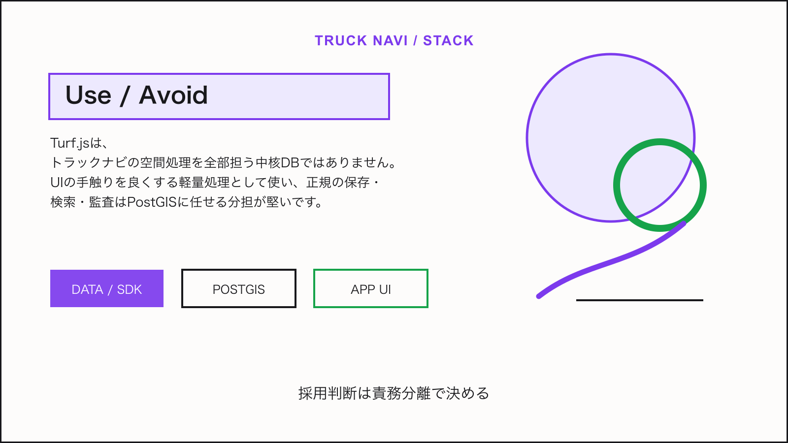

Tech Stack / Truck Navi
Turf.jsをトラックナビの軽量な空間処理に使う

この技術は何か
Turf.jsは、JavaScriptでGeoJSONの空間処理を行うためのライブラリです。距離、面積、バッファ、点がポリゴン内にあるか、ラインとの交差などをクライアントやNode.jsで扱えます。
NERV防災のライセンス情報から見える利用形態: @turf/turf license。
トラックナビで使えそうな理由
トラックナビでは、現在地が独自ジオフェンスに入ったか、目的地から何メートル以内か、管理画面でポリゴンを描いたときの簡易検証などに使えます。大量データや正式な検索はPostGIS側に寄せます。

アーキテクチャ上の置き場所
サーバーではPostGISを正とし、アプリや管理画面ではTurf.jsで即時フィードバックを返します。例えばドラッグ中の規制ポリゴン確認、停車判定のプレビュー、候補地点の一時フィルタに使います。
Mobile App / Admin UI
↓
Truck Navi API
↓
PostGIS / business data
↓
Map, tile, weather, or device layer採用時の注意点
- 大量件数の近傍検索をTurfだけで処理しない
- 測地系、単位、精度の前提を明示する
- 最終判定はサーバー側のPostGISとログに残す
結論
Turf.jsは、トラックナビの空間処理を全部担う中核DBではありません。UIの手触りを良くする軽量処理として使い、正規の保存・検索・監査はPostGISに任せる分担が堅いです。

Sources
この技術を使っていると表明しているサービス
- NERV防災は、提示されたライセンス情報上で@turf/turfを利用していると表明している。